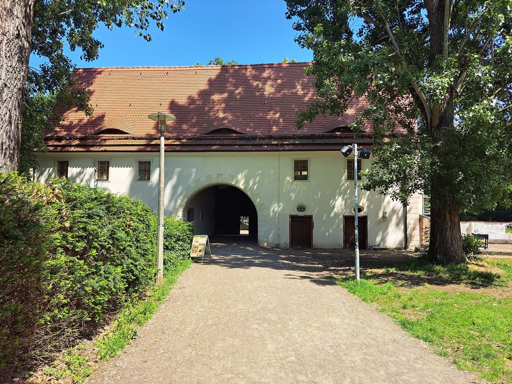
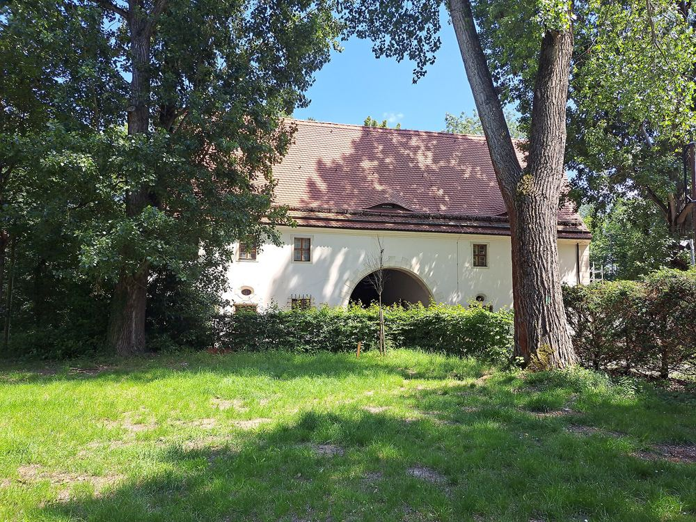

Die Ausstellung
Über 100.000 Zinnfiguren.
Drei Etagen in einem Barockbau von 1670 — Dauerausstellung, wechselnde Sonderausstellungen und das größte Stück des Hauses.
Dauerausstellung
Geschichte in Miniatur.
Das Zinnfigurenmuseum im Torhaus Dölitz gehört zu den größten Museen seiner Art in Europa. Auf drei Etagen zeigen kunstvoll gestaltete Einzelfiguren und ganze Zinnfigurendioramen regionale und Weltgeschichte. Insgesamt warten über 100.000 Zinnfiguren auf ihre Entdeckung.
Das Torhaus selbst ist über 300 Jahre alt und zählt zu den wenigen erhaltenen barocken Gebäuden Leipzigs.
Die napoleonische Epoche
Der Schwerpunkt der Ausstellung. Die Völkerschlacht bei Leipzig 1813 wird hier nicht nur erzählt — sie hat auf diesem Grundstück stattgefunden.
Antike, Mittelalter, Rokoko
Dioramen zu Babylon, zu Rittern, zur türkischen Belagerung Wiens 1683 sowie zu Ereignissen des 18. Jahrhunderts.
Die Zinnfigur selbst
Ein eigener Ausstellungsraum zeigt Geschichte und Herstellung: von der Idee und der Zeichnung über die Gravur zum Guss, zur Bemalung und zum Dioramenbau.
Leipzig und Dölitz
Zwei Räume, mit Unterstützung der LEIPZIGSTIFTUNG neu konzipiert, zeigen, wie sich das Stadtbild über die Jahrhunderte verändert hat. Der Dölitz-Raum entstand mit Leihgaben und dem Detailwissen des Bürgervereins Dölitz e. V.
Das Glanzstück
Das Großdiorama der Völkerschlacht.
Rund 25 Quadratmeter groß, mit vielen tausend Figuren. Es zeigt die Kampfhandlungen des 18. Oktober 1813 auf dem südlichen Schlachtfeld der Völkerschlacht bei Leipzig — rund um die Ortschaften Dölitz, Probstheida und Holzhausen.
Das größte Diorama des Hauses zählt 12.126 Figuren.
Fläche des Großdioramas
Figuren im größten Diorama des Hauses
der dargestellte Tag im Jahr 1813
Sonderausstellung
Historisches Tabletop
4. April 2026 bis 31. März 2027. Im regulären Eintritt enthalten.
Alle Sonderausstellungen entstehen in enger Zusammenarbeit mit den Zinnfigurenfreunden Leipzig e. V. Dasselbe gilt für die schrittweise Modernisierung der Dauerausstellung.

Was hier schon zu sehen war
Ein Haus, das sich ständig neu sortiert.
Seit der Wiedereröffnung 2014 hat das Museum in jedem Jahr mindestens eine neue Sonderausstellung gezeigt. Eine Auswahl:
- 2025/266. Apr 2025 – 28. Feb 2026 Steffen Jahn — Sammler, Maler und GraveurZeitgleich: Dioramen und Zinnfiguren aus dem Fundus des Kulturamtes der Stadt Leipzig
- 2024/251. Apr 2024 – 4. Feb 2025 „Es gibt nicht nur Nussknacker und Engel — Geschichte und Geschichten in Zinn“Die KLIO-Landesgruppe Südwest-Sachsen stellt sich vor
- 2023/243. Jun 2023 – 25. Feb 2024 Die Feld-Artillerie der Napoleonischen KriegeZum 210. Jahrestag der Völkerschlacht. Napoleon selbst war ausgebildeter Artillerie-Offizier.
- 202316. Jul – 11. Okt 2023 Eine Reise nach AventurienDas Fantasy-Rollenspiel „Das Schwarze Auge“ — die Sammlung Manfred Sebon
- 2022/238. Mai 2022 – 26. Feb 2023 SHOGUN packt ausDie KLIO-Arbeitsgruppe SHOGUN zeigt flache und plastische Figuren, Serien und Dioramen zum alten Japan — vom Bauern über die Samurai bis zum Kaiserhof
- 2021/2215. Mai 2021 – 18. Apr 2022 Ulanen, Turkos, MitrailleusenEine Zinnfiguren-Zeitreise ins Jahr 1870/71
- 2019/201. Mai 2019 – 29. Feb 2020 Napoleon-GesichterKuriositäten, die den Kaiser abbilden, glorifizieren, denunzieren und benutzen
- 2018/192. Jun 2018 – 28. Feb 2019 „Streit um Glauben und Macht“Das Heerwesen im Dreißigjährigen Krieg, zum 400. Jahrestag seines Beginns
Nur online
Dioramen aus der Dunkelkammer.
Während der Schließzeiten 2020 und 2021 hat das Museum Stücke aus dem eigenen Magazin gezeigt, die nicht Teil der Dauerausstellung sind — manche davon sind höchstens einmal in zehn Jahren in einer Sonderausstellung zu sehen.
Aus derselben Familie
- Sanitäts- und Lazarettmuseum Seifertshain
- Körnerhaus Leipzig-Großzschocher
- Regionalmuseum Torhaus Markkleeberg
- Völkerschlachtdenkmal Stiftung, Leipzig
Die ersten vier Häuser bilden gemeinsam den Museumsverbund 1813.